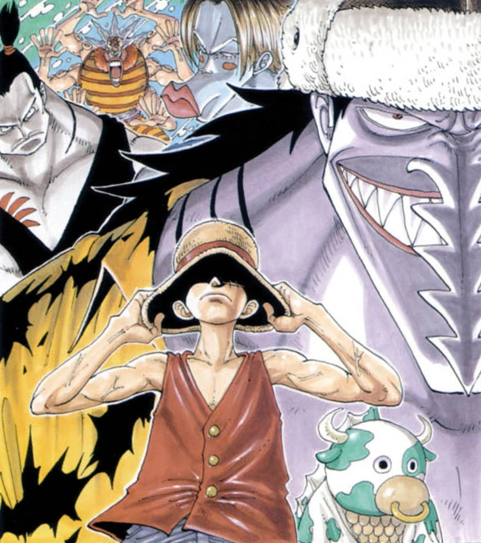

Zoro, Usopp and Johnny track Nami, who stole the Going Merry, to Cocoyasi Village, her hometown. They discover that it is ruled by Arlong and the Arlong Pirates, a pirate crew of Fish-Men of which Nami is a member. After Luffy and his new cook Sanji arrive on the island with Yosaku, Nami's past and true motives come to light. The Straw Hats decide to free both her and the village from the Fish-Men's claws.
In Pursuit of Nami
The arc begins following the end of the Baratie Arc, with Luffy, Sanji, and Yosaku heading for Arlong Park on a small boat. To pass the time, Yosaku tells them about the Seven Warlords of the Sea and how this relates to their current destination. When Sanji doubts that Nami is heading there, Yosaku explains that they were able to estimate her course after he and Johnny had suspected the connection between the two before they were thrown off the Going Merry. The two had noticed that Nami had been interested in their copy of Arlong's wanted poster, and her behavior quickly became suspicious when they told her that Arlong recently had become more active. Meanwhile, Nami arrives at Arlong Park in the Going Merry. Once she arrives at the park's gate, a boy confronts her, trying to fight Arlong for the death of his father. Nami slaps him and gives him some money to make him leave. After this, Arlong and his crew are introduced, and it is revealed that Nami is part of Arlong's pirates.
Zoro, Usopp, and Johnny arrive at the island, with the latter two tying up Zoro to prevent him from immediately fighting the Fish-Men. Seeing that two Fish-Men have spotted them, Usopp and Johnny abandon ship, leaving Zoro to be captured by them. They soon find themselves in the remains of Gosa Village, with all the houses upturned. One of the Fish-Men from earlier spots the two and starts chasing them. Johnny manages to escape and hide, while Usopp ends up getting attacked by the same boy from earlier, who had mistaken him for a Fish-Man. However, a woman manages to stop him. Seeing the real Fish-Man getting closer, Usopp readies to fight him, but gets knocked out by the woman, who claims it is not a good idea to fight one of the Fish-Men.
Meanwhile, Luffy, Sanji, and Yosaku continue sailing, and just as they take a break to eat, they encounter a giant sea cow that is attracted to their food. Luffy punches it at first, prompting Sanji to reprimand him for it; but when he realizes the sea cow sees them as food, he quickly subdues it with one kick. The three then strap the boat to the sea cow and use it to tow them to the island
Meanwhile, Usopp awakens in the woman's house, who introduces herself as Nojiko. After convincing the boy to give up on his quest for vengeance, Nojiko reveals to Usopp that she is Nami's foster sister and the island is her hometown, as well as Nami being part of Arlong's crew. Usopp then panics after he realizes what he has gotten Zoro into. Meanwhile, Zoro is brought to Arlong Park, where he finds out about Nami's allegiance to Arlong. After some banter, in which Arlong proudly states that Nami is the type of person who would betray even her own family for the sake of riches (which visibly disturbs her), Zoro throws himself into the water to test Nami's allegiance. She saves Zoro but beats him to reassure the Fish-Men that she is still part of Arlong's crew.
The Navigator's Tragedy
Arlong then heads to Cocoyasi Village, where he confronts Genzo, the village sheriff, for simply collecting a new weapon. It is here that Nojiko reveals to Usopp, both of whom are watching, about the monthly fee the villagers have to pay Arlong in order to survive. Just as Arlong is about to kill Genzo, Usopp saves him. He runs as some of the Fish-Men come after him, while the others drag Arlong off before he goes berserk. Nami arrives sometime later, but the villagers treat her coldly and leave, save for Nojiko and Genzo. The two sisters later visit the grave site of Nami's adoptive mother, Bell-mère, where Nami reveals she is almost finished paying Arlong's fee to buy back Cocoyasi.
At Arlong Park, Zoro has busted free from the dungeon (with help from Nami, who cut his bonds) and defeated all the Fish-Men. He meets the octopus Fish-Man Hatchan, who is oblivious of what happened at the park, and, thinking Zoro is a corrupt Marine, tows him to Cocoyasi. However, after landing, he overhears some villagers talk about Usopp's attack on the Fish-Men and quickly tries to rush back to the park to save him. However, it is already too late, as the Fish-Men have captured Usopp and threaten to kill him. Nami happens upon the scene and threatens to kill Usopp herself. Usopp tries to get away with a smoke bomb, but Nami intercepts him, stabbing him with a knife, before kicking him into the ocean to drown. This convinces Arlong and the Fish-Men that she is indeed one of them, while from afar Johnny looks on in horror.
Luffy's group finally arrives on the island and runs into Zoro, before Johnny arrives and tells the group what happened to Usopp. Nami soon meets them and reminds Luffy that she just partnered up with him for the treasure, as she tells the group to take their ship back and get off the island. Luffy refuses, causing Nami to angrily walk away. Johnny and Yosaku also split off, not wanting to be killed by the Fish-Men. At this moment, Usopp is shown to be alive and well, as Nami had stabbed her hand instead of him and he merely fainted. He comes across Luffy and the others and tells them what really happened. Nojiko finds the four and agrees to tell them the reason behind Nami's motives. Though Luffy and Zoro do not hear it, Sanji and Usopp (as well as an eavesdropping Johnny and Yosaku) listen to the story of Nami's past.
When Nami was a little girl, she and her older sister Nojiko lived with their adoptive mother, Bell-mère. Although they were poor, they were happy, before Arlong came. Upon his arrival, he demanded that the citizens of the island pay him for their lives - Beli 100,000 per adult, and Beli 50,000 per child. Needless to say, Bell-mère could not pay this fee, only being able to come up with Beli 100,000. And, although the two little girls were hiding, she decided to sacrifice her own life so that they could live freely. Arlong agreed to Bell-mère's terms, and killed her in front of the two little girls. Not only that, but Arlong decided to take Nami with him, deciding her cartography skills would be useful. Later, Nojiko found Nami at Bell-mère's grave as she revealed to Nojiko that she made a deal with Arlong to buy back Cocoyasi Village for Beli 100,000,000.
Back in the present, Marine forces led by Captain Nezumi land on the island. Nezumi has Genzo take him to Nami and Nojiko's household, where he accuses Nami of harboring illegal money. Nami tries to stop them, but the Marines find the money. Genzo reveals to the Marines that the money is for the repurchase of the town, admitting to a startled Nami that he and the townspeople always knew what she was doing after she "joined" Arlong. Nami tries to prevent the Marines from taking the money, but fails. Nojiko is also shot in the stomach when she tries to protect her. Nami runs back to Arlong and accuses him of sending the Marines to look for her money. However, Arlong denies it, claiming he never broke their deal, before telling her that if she wants her village back, she will just need to start again from scratch. Nami runs off as he laughs.
Back in the village, Genzo rallies the villagers, wanting to attack Arlong for going back on the deal he and Nami brokered. Nami tries to halt them, but their minds are set as they head for Arlong Park. A furious and upset Nami stabs herself in the arm where Arlong's tattoo is, only to be stopped by Luffy. After his interruption, Nami finally asks for his help. He places his straw hat on her and agrees. With that, Luffy, Zoro, Usopp, and Sanji head for Arlong Park.
Straw Hat Pirates vs. Arlong Pirates
Johnny and Yosaku, who tried to take on Arlong and failed, stop the villagers at the gate, telling them to wait for "those guys" to show up (referring to the Straw Hats). When the crew arrives, Luffy breaks down the door and slugs Arlong for making Nami cry. The rest of the Fish-Men attack, along with Momoo, the sea cow from earlier. However, Luffy dispatches them by grabbing Momoo and spinning him around like a pinwheel using his rubber powers. This leaves Arlong and his three subordinates, Hatchan, Chew, and Kuroobi, the only ones left standing. The last attack, however, leaves Luffy's feet stuck in the ground, which Arlong notices and takes advantage of by uprooting the gravel around Luffy's legs and throwing him into the ocean, proclaiming that it is a "game" and the other Straw Hats must beat the Fish-Men to save Luffy. Zoro takes on Hatchan despite his wound and a fever, and manages to win against Hatchan's Six Sword Style with help from Johnny and Yosaku.
Sanji fights Kuroobi, but is nearly defeated when he goes into the water to rescue Luffy. However, seeing that Nojiko and Genzo are helping Luffy, Sanji brings Kuroobi up to dry land and defeats him. Meanwhile, Usopp fights Chew outside of Arlong Park. At first, he fakes his defeat so Chew will leave him alone. However, remembering the others fighting for Nami's sake, Usopp gains the courage to take him on and eventually defeats Chew by drenching him with alcohol and lighting him on fire, before repeatedly bashing his head with his hammer until he is knocked out.
Nami arrives in the midst of the battle and sides with the villagers to fight against Arlong. Luckily, Nojiko and Genzo revive Luffy and Sanji frees him from the rock on his feet so he can finally fight Arlong one-on-one. A rough battle ensues as Luffy and Arlong trade blows around the park, until Arlong forces Luffy to escape into a room at the top of the tower. Arlong reveals that it is where Nami slaved away making maps for him. When Arlong pronounces that Luffy cannot use Nami the way he can, this proves to be the turning point as Luffy begins to destroy the room that has brought Nami grief through the years (with Nami thanking him as she watches furniture she worked on fall from the tower). Arlong tries to stop him with a final attack, but Luffy takes the attack and smashes Arlong through the tower, finally defeating him and destroying the park in the process.
The Navigator's Last Laugh
At first everyone believes Luffy is dead, but he emerges from the wreckage yelling "Nami, you are my friend!!", to which she wholeheartedly agrees. The villagers then celebrate their freedom, though it is almost spoiled by Nezumi, who tries to claim Arlong's money for himself. Some swift beatings from Nami and the rest of the Straw Hats convince him otherwise. Nezumi retreats, swearing revenge against Luffy. He reports Luffy's victory to his Marine base.
In the aftermath, the villagers throw a party celebrating their heroes. Luffy finds Genzo at Bell-mère's grave site, where he makes Luffy promise not to take Nami's smile; otherwise, he will hunt him down and kill him himself. Nami gets a new tattoo of a tangerine and a pinwheel merged to replace her Arlong one. The next day, Johnny and Yosaku bid the Straw Hats farewell since they are bounty hunters, and it would not look good to be traveling with pirates. As the crew gets ready to leave, they realize Nami has not arrived yet. Nami then yells for them to cast off as she runs for the docks. The confused villagers try to stop her so they can say goodbye, but she runs past them and jumps onto the ship. She pulls up her shirt to reveal that she stole all the villagers' wallets as she ran past, causing all of them to yell "you little brat!" Despite their disbelief and anger, they wave goodbye to her and the Straw Hats as they leave the island.
As she watches them go, Nojiko realizes Genzo is not wearing the pinwheel he once wore on his hat to make Nami laugh when she was a baby and to make her feel better as she grew up. When asked, Genzo tells Nojiko that he doesn't need it anymore. The scene then changes to reveal the pinwheel on Bell-mère's grave as the Going Merry sails off to the Grand Line.